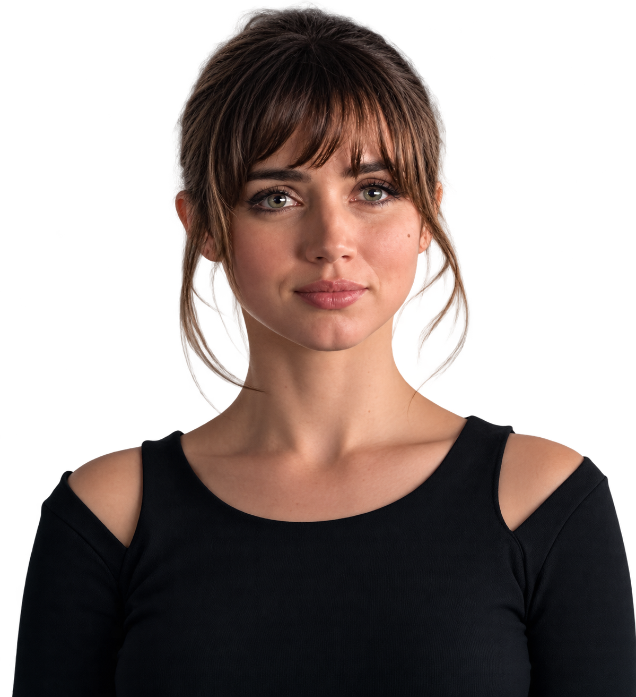
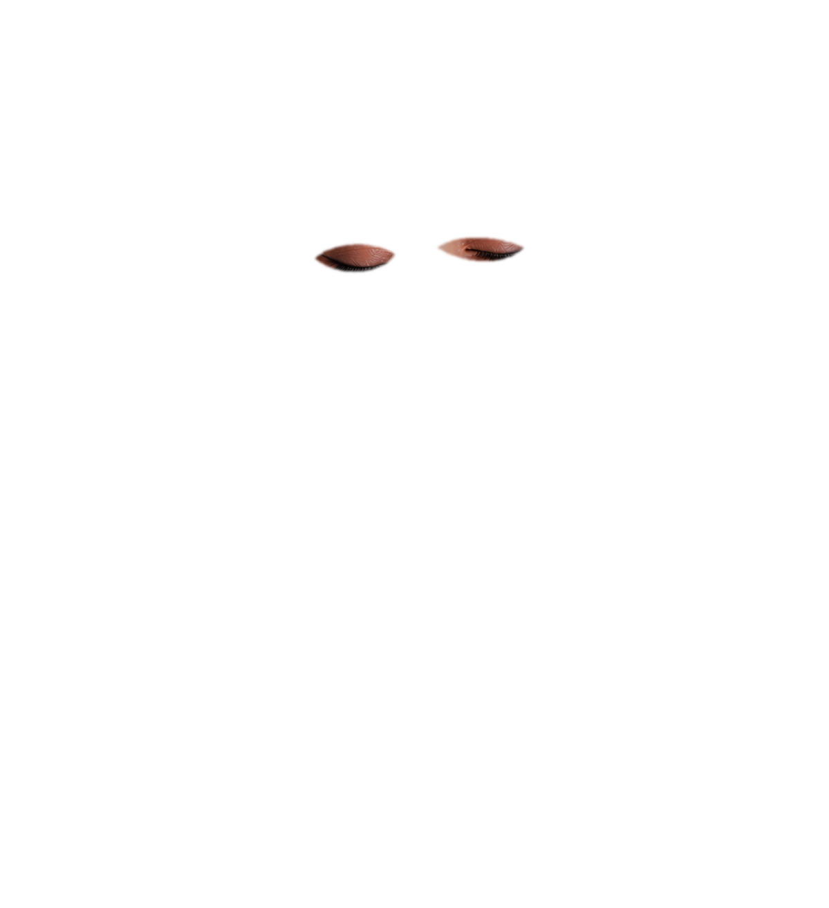

Original portrait is shown unchanged as the base. Transparent PNG eyelid layers are previews only and are not connected to the application.


These concept layers adapt the supplied closed-eye reference to the open portrait; facial lighting and lash styling still need review. No production files or original portrait pixels were modified.